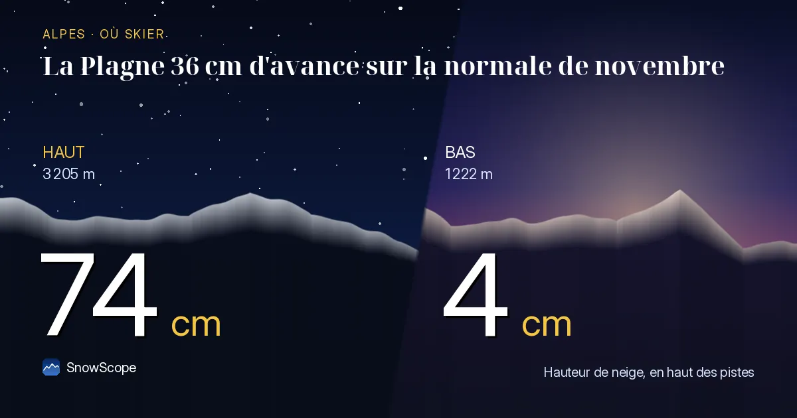

La Plagne 36 cm d'avance sur la normale de novembre
La neige dans les Alpes s'accumule plus vite qu'aucun souvenir récent ne l'aurait prédit pour fin novembre. Sur les pentes intermédiaires de La Plagne, nos mesures montrent 36 cm de neige de plus aujourd'hui que la quantité habituelle à cette date lors des hivers précédents, soit un gain de 38 pour cent.
Consultez les prévisions neige en temps réel pour La Plagne sur l'application SnowScopeHauteurs de neige, alertes poudreuse et carte 3D, gratuitement.
De combien sommes-nous vraiment en avance ?
L'eau stockée en montagne en ce moment importe pour l'hiver. Nous comparons la profondeur de neige d'aujourd'hui à la moyenne des 46 derniers hivers à la même date. Sur les pentes intermédiaires de La Plagne, à 2 137 m d'altitude, le modèle indique 36 cm aujourd'hui contre 38 cm habituellement à ce stade de la saison. Cela semble proche, mais l'histoire est différente plus haut. Au sommet, à 3 058 m, le modèle estime 84 cm, bien au-dessus de ce que la saison livre normalement en novembre. Les pentes supérieures sont où commence la réserve d'eau.
Cet excédent importe car la neige précoce se consolide et recharge les réservoirs montagnards jusqu'au printemps. Là où la neige tombe maintenant sur un sol froid, elle reste. Les Arcs racontent la même histoire : à 2 213 m, le modèle lit 44 cm aujourd'hui, 38 pour cent de plus que les 32 cm de moyenne à cette date sur 46 ans. Le schéma est clair dans toutes les Alpes du Nord françaises—la saison écrit un excédent précoce dans les registres.
| Station | Hauteur de neige | Neige fraîche, 72 h | Attendu, jours suivants | Sommet |
|---|---|---|---|---|
| Les Arcs | 166 cm | 134 cm | 77 cm | 3 205 m |
| Orelle | 145 cm | 143 cm | 92 cm | 3 221 m |
| La Plagne | 144 cm | 125 cm | 77 cm | 3 058 m |
| La Grave | 133 cm | 122 cm | 108 cm | 3 543 m |
| La Rosière | 131 cm | 130 cm | 72 cm | 2 799 m |

Trois jours de fortes chutes devant nous
La prévision du modèle du vendredi 20 novembre prévoit 77 cm de neige nouvelle sur les pentes supérieures de La Plagne au cours des trois prochains jours. La plupart tombera samedi 22 novembre : 52 cm en une seule journée. Ce n'est pas un ajout marginal ; c'est une vague qui poussera les pentes intermédiaires de 36 cm à environ 84 cm dimanche soir. Aux Arcs, le même samedi apporte 52 cm, portant la profondeur de 166 cm à plus de 200 cm sur le terrain supérieur.
Le niveau de congélation baissera à mesure que le système avance. Samedi, il descend à 1 870 m à La Plagne, ce qui signifie que la neige atteindra les zones de base—1 217 m—pour la première fois du registre officiel de cette saison. Dimanche 23 novembre, le niveau de congélation s'effondre à 1 340 m. L'air froid arrive avec la neige.
L'eau en mouvement depuis les hautes terres
Les mesures de profondeur de neige à trois stations d'altitude nous disent comment l'eau s'est déjà installée. À Weißseespitze, 3 499 m en Autriche, la profondeur mesurée le 20 novembre était 352 cm. À Donin du Jour, 2 385 m en Suisse, 106 cm ont été mesurés le même jour, avec 33 cm ajoutés dans les 24 heures précédentes. La neige s'épaissit rapidement aux altitudes intermédiaires où les ruisseaux et la fonte commencent leur travail.
Ce sont des mesures de station en points uniques le 20 novembre, pas des estimations sur une vaste zone. Mais elles confirment ce que le modèle prévoit : la neige s'accumule rapidement au-dessus de 2 300 m et continuera pendant le week-end. L'eau ne s'écoulera pas vers les vallées encore—elle est encore gelée—mais le total stocké en montagne augmente fortement.
Où trouver de la neige skiant aujourd'hui
Les Arcs domine la région avec 166 cm sur ses pentes supérieures au 20 novembre. Orelle en compte 145 cm, et La Plagne 144 cm. Les trois stations affichent un gain récent similaire : environ 50 cm sont tombés dans les 24 heures avant le 20 novembre sur ces sites. La différence entre eux est mince, mais l'altitude importe. À la base de La Plagne, 1 217 m, le modèle montre seulement 8 cm. La neige mince là-bas risque d'exposer roche et sol.
Dimanche 23 novembre, la zone couverte de neige de la région devrait passer de 77 180 km² aujourd'hui à 100 870 km². C'est 1 040 des 1 204 stations des Alpes qui gagnent une couverture de neige. Les stations basses rejoindront les hautes. C'est un tournant de la saison—le moment où le stockage d'eau en montagne passe du symbolique au réel.
Ce qui vient ensuite
Après dimanche, le modèle montre seulement de petits ajouts : 17 cm aux Arcs et 18 cm à La Plagne le 23 novembre lui-même, puis des jours plus secs. La vague principale est samedi. Si la prévision tient, les Alpes entreront fin novembre avec des réserves d'eau bien au-dessus de la tendance de 46 ans. Cet excédent ne survivra pas tous au printemps—une partie fondra pendant les réchauffements hivernaux—mais c'est un bon début de saison.
Pour l'instant, concentrez-vous sur les hautes terres. Les pentes supérieures aux Arcs, à Orelle, et à La Plagne seront le meilleur terrain de ski samedi, avec de la neige nouvelle arrivant frais toute la journée. Surveillez le niveau de congélation ; samedi, il touche les zones de base dans certaines stations, ce qui signifie que la neige mouillée est possible plus bas. Consultez le bulletin d'avalanche officiel avant de quitter les pistes balisées après les fortes chutes de samedi.
Conseils aux skieurs
- Skiez au-dessus de 2 300 m ce week-end pour la meilleure qualité de neige et les conditions les plus sûres. Les pentes basses verront de la neige mouillée samedi à mesure que le niveau de congélation baisse.
- Samedi 22 novembre sera la journée des plus fortes chutes : 52 cm prévus sur les pentes intermédiaires et supérieures. La visibilité et le risque d'avalanche seront tous deux élevés—consultez votre bulletin d'avalanche local avant de quitter les pistes balisées.
- Dimanche 23 novembre, les pentes supérieures aux Arcs et à La Plagne détiendront plus de 200 cm. C'est une excellente couverture pour fin novembre, mais les zones de base restent minces ; restez sur un terrain damé aux altitudes basses.
- La neige de début de saison à cette profondeur et cette vitesse ne dure pas pour toujours si un temps chaud revient. L'eau est en montagne maintenant, mais l'hiver n'est pas encore établi. Planifiez des voyages multi-jours pour consolider les gains.
- Ce sont des prévisions de modèle pour des zones larges, pas des mesures ponctuelles. Les vents locaux peuvent déplacer significativement la profondeur de neige, et les zones minces sous une couverture épaisse peuvent toujours cacher des rochers. Exercez la prudence sur les pentes étroites et portez toujours un casque.
À propos de ces chiffres
Les hauteurs de neige des stations sont la neige la plus épaisse sur le haut du domaine, d'après le modèle de neige SnowScope (environ 1 km, calcul du 20 novembre) ; ce sont des estimations pour une zone, pas une mesure en un point. Les valeurs des stations de mesure sont mesurées à la date indiquée. Les prévisions peuvent changer. Consultez toujours le bulletin d'avalanche officiel avant le hors-piste.
Bulletins d'avalanche officiels: EAWS (Alps)
Citer ce bulletin
Pour la recherche, l'enseignement ou la presse : chiffres et graphiques réutilisables librement sous CC BY 4.0 avec cette citation.
SnowScope (2026), La Plagne 36 cm d'avance sur la normale de novembre, https://snowscope.app/blog/fr/2026/11/alps-la-plagne-snow-depth-today-20-november-2026.html, consulté le 2026-11-20
SnowScope (Atlas Labs). (2026, November 20). La Plagne 36 cm d'avance sur la normale de novembre. SnowScope snow reports. https://snowscope.app/blog/fr/2026/11/alps-la-plagne-snow-depth-today-20-november-2026.html
BibTeX
@misc{snowscope2026alpslaplagnesnowdepthtod,
author = {{SnowScope (Atlas Labs)}},
title = {La Plagne 36 cm d'avance sur la normale de novembre},
year = {2026},
month = nov,
howpublished = {\url{https://snowscope.app/blog/fr/2026/11/alps-la-plagne-snow-depth-today-20-november-2026.html}},
note = {Published 2026-11-21 10:38 UTC; accessed 2026-11-20}
}· CC BY 4.0 · Méthodes, données et outils →
La Plagne : neige et température selon l'altitude, cet hiver vs l'hiver dernier (outils) →
Suivre La Plagne
Gratuit : un message quand la neige arrive, et la météo chaque matin.